A merch line for Visit Salt Lake. Working name. Round 1, October 28, 2026.
The Great Salt Lake from the ISS: pink north arm, blue south arm, split by the railroad causeway. NASA, 2025.
1
Visit Salt Lake merch today is a logo on a blank.
1 tee
The only documented piece of Visit Salt Lake apparel is the reward tee from the 2021 West of Conventional mural tour. No online store turns up, and there is no dedicated shop.
Yid, client answers, Oct 2026 · KSL and VSL on West of Conventional, 2021
2
If you can buy it at the airport or a local shop, it isn't it.
That's the bar. Nothing that's just a logo, nothing that looks like mall product. The taste check is Nike ACG, House of Terrors, Uuuntld and WNTD.
Yid, client answers, Oct 2026
3
Four parts: context, foundation, executions, build.
Visible text stays short and the reasoning lives in the notes. Anything marked (verify) came from background knowledge and gets checked before Round 2.
Context, slides 5 to 20. Who does merch well right now, who got it wrong, and what we take.
Foundation, 21 to 32. The parent brand, who buys, the Salt Lake symbol bank, materials and techniques.
Executions, 33 to 52. Five lanes and the pieces in each, then the full line on one page.
Build, 53 to 60. The 50-unit test, cost, production, legal, and the decisions we need.
4
What merch is now.
The brands people collect stopped treating merch as a logo on a blank. Here's who does it well, what failed, and what we take from them.
5
Merch became the luxury product.
Hermès petit h makes one-of-one objects from leftover leather, silk and porcelain, from about $70 to $70,000.
Hermès Off-Piste skis, October 2025: sycamore over an ash core, $19,300. The house sells the sport its customers actually do.
Loewe turned a 2024 Instagram joke into a real tomato clutch in nappa lambskin.
Miu Miu grew retail 35% in FY2025 while spending on culture, like Summer Reads books in city-specific colors with ex-libris stamps.
AnOther and Nuvo on petit h · Teton Gravity Research, 2025 · Tatler Asia on Loewe, 2024 · The Industry on Miu Miu, 2026
Kunimasa Aoki, Loewe Foundation Craft Prize 2025 winner, with his work. Credit the hands.
6
Technique replaces the logo.
Bottega Veneta's woven intrecciato reads as Bottega with no wordmark. Stone Island claims over 60,000 garment-dye recipes. Satisfy puts holes in a cotton tee and calls it MothTech.
Fzine and 10 Magazine on Bottega, 2025 · Stone Island, About · Urban Industry on Satisfy · Gear Patrol on Carhartt
Satisfy MothTech tee, Chamonix goat graphic with cut-through holes, 2025.Fort Lonesome chain stitch on a vintage Singer. The machine is the signature.Ciele FSTCap Elite: perforated panels and reflective trim, no hardware.
7
Scarcity works when the rules are public.
The calendar, the password and the edition size are part of the product.
Who
The rule
The number
Supreme
Weekly drop in stores, never enough stock
Thursdays, 11am ET (verify)
Palace
Seasonal weekly drops, unpredictable mix
Summer 2026, Drop 7 on June 19
Corteiz
Password site, pop-ups announced hours ahead, swap your jacket for ours
50 Bolo puffers
Dior x Air Jordan 1
Lottery, edition size published
8,500 high, 4,700 low
Fermat FRMT
Five pieces sold through Fermat's own product
75 of each
Highsnobiety on Supreme and Corteiz · Hypebeast on Palace, 2026 · Hypebae on Dior x AJ1, 2020 · Hyper on FRMT
8
Graphics houses make culture merch work.
A24 hires Online Ceramics, Brain Dead and Nahmias, credits them on the product page and sews its own label inside. The film is the subject and the designer is the author.
Fast Company on A24 x Online Ceramics · Hypebeast HB20, Oct 2025 · Hypebeast and Highsnobiety on Marty Supreme, 2025 · Gizmodo, 2026
Online Ceramics, Grateful For 60 Years tie-dye long sleeve, 2025. The brand started as bootleg Dead lot tees.Online Ceramics x blink-182 Dude Ranch long sleeve, 2024: sleeve print plus a small chest hit.Brain Dead x Sunn O))) tee, 2025: one-color photocopy texture, no cleanup.
9
Tech companies turned merch into fashion.
CNN said in August 2026 that most tech merch 'lacks a clear point of view.' A place has one built in.
Company
The move
What happened
Anthropic
A washed navy cap that says 'thinking,' given away with coffee at a NYC newsstand, October 2025
Never sold. One eBay seller moved 117 at $49.99
OpenAI Supply Co.
Public since late July 2026: $15 socks to a $175 half-zip, plus an archive of 'decommissioned' pieces
Items sold out in days; a Codex set resold for $475
Perplexity Supply
Copy built on curiosity; a $135 chore jacket in 'Wonder Blue'
A designer on it compared the work to Highway 101 billboards
Fermat FRMT
A B2B software company made five 'couture' pieces
75 of each, with pre-orders before launch
CNN, Aug 17 2026 · Quartz on OpenAI Supply Co., 2026 · perplexity.supply · Hyper Studios on Fermat
10
Outdoor got quieter and more specific.
The loud gorpcore years are over. What's left is one good shell, one good fleece, trail runners, and not talking about it.
Jing Daily, Feb 2026 · Outside, Sept 2026 · Jing Daily on the Arc'teryx Museum, 2024 · Glossy on Tracksmith
Nike ACG Lava Loft. ACG relaunched as its own outdoor brand in February 2026, with a Basecamp store in Beijing.Arc'teryx System_A Drop 06, 'Run to Rock,' 2023. Arc'teryx's Shanghai Museum runs 2,400 square meters with a repair desk.Tracksmith, The Amateur Spirit, 2021. Serious kit for serious amateurs, 'no athleisure.'Nike ACG Fall 2026 trail lineup: earth tones and one hot accent.
11
The best regional lines name real places and real makers.
Adidas Spezial names shoes after towns, Blackburn SPZL and Manchester 89, and launched in Manchester in 2014, not London. Gary Aspden: 'culture can exist anywhere.'
Snow Peak Local Wear limits each project to one regional producer, like Niigata and Iwate in 2024, and sells it in Japan only.
66°North started in 1926 making gear for Icelandic fishermen. Its 2025 Fisherman's Print comes from the wear left on old coats by 'salt, storms and time at sea.'
Dazed and 032c on Spezial · WWD Japan on Snow Peak, 2024 · Hero and T3 on 66°North, 2025
12
Destination merch that works has a maker and an archive.
None of these is a logo on a blank. Each one lends a public mark to someone with taste.
Who
What they did
Why it works
Printed in Pittsburgh, 2023
The city licensed union printer CommonWealth Press. Shirts from $30, revenue share to the general fund
The icon came from an 1800s merchant flag in the city archives
Tokyo Tokyo
50-plus souvenirs with partner makers, and an official shop at Haneda since February 22, 2020
The city acts as curator and co-publisher
Only NY x NYC Parks
Licensed the Parks leaf and the MTA. The leaf tee has sold for a decade
Public infrastructure treated like a heritage logo
Parks Project
Public-land graphics with a giving model: about $1,000 given in 2014, nearly $3 million by 2026
A real number tied to a real place
Pittsburgh Magazine and WPXI, 2023 · Tokyo Metropolitan Government, 2020 · onlyny.com · Orange Coast and Field Mag on Parks Project
13
Three ways city merch goes wrong.
Each one got friendlier, cheaper or more popular than the idea could hold.
We ❤️ NYC, March 2023. A refresh with a blocky sans and an emoji-style heart got mocked so hard that officials had to say it wasn't replacing Milton Glaser's original.
The $22 Aspen crewneck. The town name sells for $22 to $100 on Etsy, PacSun and Abercrombie. Once the mall has it, it stops proving you were there.
I amsterdam. The letters drew such crowds that the city pulled them from Museumplein on December 3, 2018.
History and a wink only. No rings, no official marks.
Reference
What happened
What we take
Salt Lake 2002 beret
Roots, $19.95, worn by the US team at the opening ceremony; lines out the door
A cheap, slightly odd hat with a story beats a logo
Paris 2024
A hat as mascot, a real design director, 75 licensees, mostly small French firms
Spread the work across local makers
Utah Jazz City Edition, 2017-18
Red rock gradient. 300 jerseys gone in 72 hours, resale at $600 on $130 retail
Utah landscape as a colorway already sells here
Venezia FC
Left Nike for Kappa to get creative control; 95% of online sales came from outside Italy
Sell the city, not the organization
ABC4 2002 retrospective · Wallpaper and WIPO on Paris 2024 · KSL on the Jazz, 2017 · Versus on Venezia FC
15
Utah already has people doing this well.
A Provo label went national, a Provo studio drew type for NikeLab, and a Salt Lake brand owns the premium trucker.
Who
What they've done
What it proves
Lonely Ghost, Provo, 2019
Built on 'I love you, say it back.' Ghost Grocery at Riverwoods, a Pacsun exclusive in August 2025, a Merrell shoe that September
A phrase can carry a Utah brand nationally
Actual Source, Provo
JP Haynie and Davis Ngarupe. Thermal typeface for Virgil Abloh's NikeLab Re-Creation Center, 2019; A24 Books identity, 2026
Fashion-grade type already lives in Utah County
Gigi Pip, Salt Lake, 2015
Official REDWEST hat sponsor with a Mountain Vintage Trucker; SLC Speakeasy hat bar, October 2025
A local brand already makes the hero object
Kilby Court and Kilby Block Party
25 years of all-ages shows, tees credited to local artists Chloe Monson and Tom Petersen; 25,000 to 30,000 a day at the 2026 festival
Credit the artist on every piece
Fice, downtown since 2008
Utah's only Tier One Nike account, now shifting to community events and art shows
The clubhouse already exists
Mouthwash
The Utah Jazz 2022 rebrand: motion system, type, court and jersey colorways
Utah teams already hire fashion-grade studios
PR Newswire on Lonely Ghost, 2025 · SLUG and Lampoon on Actual Source · Utah Business on Gigi Pip, 2025 · kilbycourt.com; Bailey Rogers portfolio · Salt Lake Sideways on Fice · mouthwash.studio
16
Hotels, restaurants and museums sell proof you were there.
Vogue Business, 2026: the product is becoming 'the souvenir of an experience rather than the experience itself.'
Vogue Business Summit 2026, via The CFO Diary · SF Standard, Aug 20 2026 · FashionNetwork on Erewhon, 2024 · Glossy on MoMA Design Store
Ace Hotel Nalgene, 2026. Ace is credited with starting the hotel shop, and stocks 'anti-souvenirs' like Krink markers.A24 x Houseplant stacking ashtrays and matchbook, 2026. Bar-top objects as brand carriers.A24 Music, Primetime soundtrack on vinyl, 2026. A film studio with a record label.Le Labo labels by Mazarine: blanks for the city and date, filled in at the counter.
17
What people are picking up right now.
Real lettering over fake vintage. PRINT's 2026 Type Report says designers are leaving 'vintage' fonts for actual signage, packaging and regional lettering.
The premium trucker. Foam fronts are out. Cotton twill, corduroy and suede fronts are in.
Fewer, slower drops. Three to five pieces every six to eight weeks. A drop every two weeks 'turns scarcity into noise.'
Stores as clubhouses. Pop-ups, run clubs and third spaces. Six in ten Millennials want retail that mixes community and shopping.
Western, done quiet. Pearl snaps and a felt hat are back. Fringe and big buckles are out.
PRINT Type Report, 2026 · Foremost Hat on truckers · E-commerce Fast Lane on drops · Retail Technology Show, 2026 · Yahoo Shopping and E! on Western, 2026
18
What we take, part 1: the garment carries the idea.
Put the idea on it, not the logo. 'thinking' on a cap, 'I love you, say it back' on a hoodie. Ours should be something locals already say.
Name the author. Every drop credits a designer, ideally from Utah, the way A24 and Kilby Court do.
Print the edition size. Dior did 8,500, Fermat did 75, the Jazz did 300. The number goes on the hem tag.
Let the make be the logo. One technique and one named fabric per season, the way Bottega owns a weave and Satisfy owns MothTech.
Make one hero that isn't apparel. OpenAI's $70 basketball, the New Yorker tote, Pendleton's 1916 Glacier Park blanket.
19
What we take, part 2: run it like a label, not a gift shop.
License and curate. Like Pittsburgh, Only NY and Tokyo Tokyo, VSL owns the archive, the story and the official tag, and picks the maker.
Pull from the archive, not the logo file. Pittsburgh used an 1800s merchant flag. Salt Lake has Saltair postcards, the 1899 Salt Palace and the grid.
Locals first. Only NY and Detroit vs. Everybody sold to residents first. Visitors buy what locals wear.
Give it a room and a calendar. A shelf at a place like Fice, and a release every six to eight weeks tied to the city's real seasons.
Tie a real number to the place. A Great Salt Lake line without a measurable give to the lake is just pink.
20
Foundation: what every piece stands on.
The parent brand, the people who buy, the symbols that are ours, and what fabric and technique say before any graphic does.
21
The parent brand is America's Mountain City™.
The platform says you don't have to choose between city and mountains. Every piece in the line maps to one of its three pillars.
Both at Once. City and mountain in the same place, no compromise. "A trail that ends two blocks from a sidewalk café."
Perpetual Momentum. Jazz, Mammoth, RSL, Royals, festivals and art. "Already different than the last time you were here."
Frictionless. "Forty minutes from gate to gondola." The airport is ten minutes from downtown.
What the merch inherits. The palette and its names, the salt crystal, the contour texture, Ivar and Saans, and a voice that is confident, playful, friendly and genuine.
VSL Brand Guide v6.0 R3, 2026
22
A sub-brand: keep the bones, bend on purpose.
The guide's Sub-Brands section is still empty, so this line can be the first one. Visit Salt Lake leads, and the line lives one step away from the campaign.
What we keep
What we bend, and why
The palette by hex, and its names as colorway names
The crystal alone as a label mark. The guide calls it a supporting asset; on a neck label it becomes the sub-brand's mark.
Filled crystal for embroidery, outline crystal for print
Dress the local, not the visitor. The guide casts people who "flew in for this"; the merch has to pass the local test first.
"Salt Lake," not "Salt Lake City"
No eyebrows. The guide's coordinate and elevation lines are dropped; if a number appears, it is the graphic.
The co-branding rule: VSL leads, a partner at about 80 percent weight
America's Mountain City™ moves to the hangtag. On the garment, the city name, the place and the pillar lines do the work.
Locals buy pride and not looking like a tourist. Visitors buy proof of trip. Both buy the piece a local would actually wear.
Who
How many
SLC International passengers, 2025
28.16 million
Salt Lake County visitor spending, per year
$6.15 billion
Utah visitor spending, 2025, a record
$13.7 billion
Convention and event attendees, 2019
655,289
Utah skier visits, 2024 to 2025
6.5 million
Salt Lake County residents
About 1.2 million, median age about 32 (est.)
SLC International Airport, 2025 · Visit Salt Lake Annual Report, 2025 · Gardner Institute, 2026 · Visit Salt Lake Annual Report, 2019 · Gardner Institute, ski season report, 2025
24
People buy merch now as proof they were there.
23 percent of travelers made a trip in the past year to buy something they couldn't get online. Skyscanner calls it pilgra-merch.
28 percent of Gen Z are most proud of a limited-edition grocery tote from a destination.
63 percent of Gen Z have bought something because of merch, and apparel is the favorite category at 62.6 percent.
3.5x. That's how much more Gen Z and millennials spend in airport retail than Gen X and boomers.
Skyscanner via Euronews, 2026 · PPAI via Quad and Brandelity, 2024 to 2025 · ACI via Gulf Business, 2025
Ace Hotel Nalgene. A hotel-room object sold as merch.
25
The symbol bank, part one: the lake.
The Great Salt Lake is the deepest well we have, and almost none of it has been on a garment with any taste. Under all of it is Bonneville, the ice-age lake that filled the valley, and the salt flats west of the lake (verify).
Utah DWR, 2023 · Weber State and USU · UMFA and Artforum · KSL on the VSL brand, 2021
Brine shrimp. Harvested since 1950 by 21 companies, a $10 to $60 million a year industry.The pink north arm. Cut off by the railroad causeway, it runs 26 to 30 percent salt, and algae and archaea turn it pink.Spiral Jetty. Robert Smithson, 1970, 1,500 feet of basalt, visible when the lake sits below 4,197 feet.Salt. Halite grows in cubes, and the VSL mark is already a salt crystal.
26
The symbol bank, part two: the city and the mountains.
Also in the bank: the longhorns that walk down Main Street every July for Pioneer Day, and 801, the original 1947 area code that locals still use as shorthand.
Research 04 symbol bank, 2026 · Church News, 2025 · Deseret News, 2024 · NASA Earth Observatory, 2001
The grid. Laid out in 1847, and every address is a coordinate from one marker downtown (verify).Wildflowers. Paintbrush in Albion Basin, red against pine green. Yid asked for more of these.Bison. Put on Antelope Island in 1893 and rounded up in public every fall.Lake-effect snow. About 5 percent of the snowfall, and the driest of it.
27
Materials that signal: cotton weight, dye and fleece.
6.5 oz and up is now the visible line between merch and clothes. A 5 oz promo blank reads as a free shirt.
Garment dye is the fastest way to a color story that isn't commodity, for $2 to $5 more per blank.
14 oz cross-grain fleece for the hoodie. At 50 units a heavyweight hoodie lands at $34 to $45 (est.).
Made in USA blanks like Los Angeles Apparel roughly double the blank cost, but the claim is clean.
Research 05, blanks and makers, 2026
Pleasures Suburbs longsleeve. The heavy body does half the work.
28
Technical materials, and why not Gore-Tex.
Polartec Alpha Direct. Lofted insulation first built for US Special Operations. No liner, very breathable, snags easily. It's the Gain pullover.
Pertex Quantum Air. Light, tightly woven nylon that trades some wind resistance for breathability. It's the strip on Gain.
3M Scotchlite reflective. A safety material doing a design job, $2 to $6 a placement (est.). It's Five A.M.
Gore-Tex isn't for sale. W. L. Gore licenses about 200 brands, and a DMO won't get a license.
Research 03, materials glossary, 2026 · Bergzeit Magazin on Gore-Tex licensing, via research 05
Polartec Alpha Direct 90. The loft is the garment.
29
Techniques say things before the graphic does.
Embroidery, chain stitch, garment dye and good labels move a piece from souvenir to clothing. DTG and plain plastisol on a commodity blank keep it a souvenir. Cost runs from $ (under $2) to $$$$ (over $10) per placement.
Technique
Cost
What it says
Where we use it
Water-based screen print
$ to $$
Soft hand, vintage, feels like the shirt
It Came From, Vecino, Wild Rag
Plastisol screen print
$
Bright, opaque, a little plasticky
Nothing To Do hoodie
Embroidery and tackle twill
$$ to $$$$
Real clothing; varsity, earned
Club Deportivo crest and number
Chain stitch
$$$$
Artisan, Western, one of one
Paintbrush Yoke Shirt
Laser perforation and etching
$$$
Tonal and quiet
Five A.M. gussets, steel Two Arms
Reflective transfer
$$ to $$$
Running, night, technical
Five A.M., Gain back neck
Blind deboss and branding
One die, $150 to $300 (est.)
No ink, all material
Artemia, Two Arms, chore coat patch
Research 05, decoration techniques, 2026 · Lane notes, Round 2
30
Five lanes, one line.
Thirteen pieces across five lanes. Each lane has its own voice, and all of them share a label, a palette and one test: would a local wear it?
Streetwear. Salt Lake is for the weird: band-merch logic from the city's punk and straight-edge scene.Performance. We run on Salt Lake: training kit where the construction is the decoration.Objects. The unseen things of a Salt Lake day, made like they matter.Neo-Western. Rancher at 7,000 feet: quiet workwear and real craft.Latino. Designed by Latino designers from Salt Lake County, with money going back to the community.
31
How we got here.
132 → 80 → 13
Five mood boards with 132 references: 80 kept, 47 cut. Two concept rounds of 15 pieces each: 12 in after the first round, 13 in after the second.
32
From punk to now: a small scene that kept the doors open to all ages.
Salt Lake punk was never big. It lasted because there was always a room for kids too young for bars, and that's still how it works.
Era
What happened
Where
1978 to 1985
Spitting Teeth play a 1978 campus show. Massacre Guys put out a 1982 EP and tour with Dead Kennedys and Bad Religion. SLC Punk! is set here in fall 1985.
The Roxy, Indian Center, Speedway Cafe under the viaduct (1984)
Late 80s
SLUG starts in 1989 as a punk zine. Insight is the city's first straight-edge band.
Speedway Cafe (to 1990), The Word, Club DV8
1990s
Clear makes straight-edge metalcore. Police call straight edge a gang, there are firebombings, and a 15-year-old is killed in 1998.
Club DV8, The Moroccan
2000s
Kilby Court opens in a garage in 1999. The Used come out of Orem, Velour opens in Provo in 2006, and Gaza and SubRosa get heavy.
Kilby Court, Urban Lounge (2001), Velour, The Depot
2010s
S&S Presents buys Kilby in 2008 and adds Metro Music Hall. Cult Leader signs to Deathwish. Kilby Block Party starts in 2019 as a street party.
Kilby, Urban Lounge, Metro, Soundwell (2018)
Now
DIY hardcore in a sober hall, punk nights at Aces High, and an indie festival at the Fairpark expecting about 30,000 a day.
Fellowship Hall, Aces High, Kilby, Fairpark
SLUG, A Subjective History of Punk Rock in Utah · Grudge City Activities zine, 2008 · City Weekly, Flashback 1989 · Salt Lake Tribune, Speedway Cafe · Wikipedia, SLC Punk!, Clear, The Used, Gaza, Cult Leader, Velour · BYU Daily Universe, 1997 and 1999; Deseret News, 1998 · KUER and KSL, Kilby at 20, 2019 · Deseret News, Kilby Block Party, May 2026 · Research file 08, 2026
33
What the scene is now: small, DIY, mostly hardcore, still all-ages.
There isn't one Salt Lake punk scene in 2026. There are a few small ones that share rooms, plus a big festival on top.
Hardcore is the most active part, and it's DIY. The main room is Fellowship Hall, a sober-community hall in Sugar House. Local bands with 2026 releases include Bounty Hunter and Hollow Like Her, and Taste of Blood and xForever Warx are on the bills.
Punk lives in bars and basements. Aces High Saloon ran a locals night and The Bearded Punk Fest in 2026. SLUG covers The Corleones and Vicious Souls, and City Weekly picked P.S. Destroy This, a riot grrrl band.
Indie is the public face. S&S Presents runs Kilby Court, Urban Lounge and Metro Music Hall. Kilby Block Party booked Turnstile next to Lorde in 2026 and has Deftones on the bill for 2027.
It's small, and that's the point. There's no big local label, just City of Dis on Bandcamp, Raunch Records for vinyl, and SLUG, still publishing since 1989. A hall show is probably a few dozen to a couple hundred people (estimate, verify).
What makes it Salt Lake. All-ages rooms, a straight-edge legacy that now lives in a sober hall, making your own spaces, being the weird kid in a religious town, and the skate and snow shops that sponsor the same kids.
No Echo, Bounty Hunter, Taste of Blood and xForever Warx features · Coyote Music, Hollow Like Her, 2026 · Fellowship Hall listings, 2026 · SLUG show reviews and Localized, 2026 · City Weekly, 2026 music issue · Deseret News and SPIN, Kilby Block Party, 2026 · Research files 06 and 08, 2026
34
Salt Lake is for the weird.
The scene is small and it's still all-ages. The lane borrows its language: one-color back prints, xerox grain, hand lettering, a phrase doing all the work, the X as the all-ages hand stamp and never as a crew mark.
Hand-lettered hardcore flyer, marker on pinkOnline Ceramics, XXX on the sleeveSLC Punk!, 1998Brain Dead x Sunn O))), photocopy texture
35
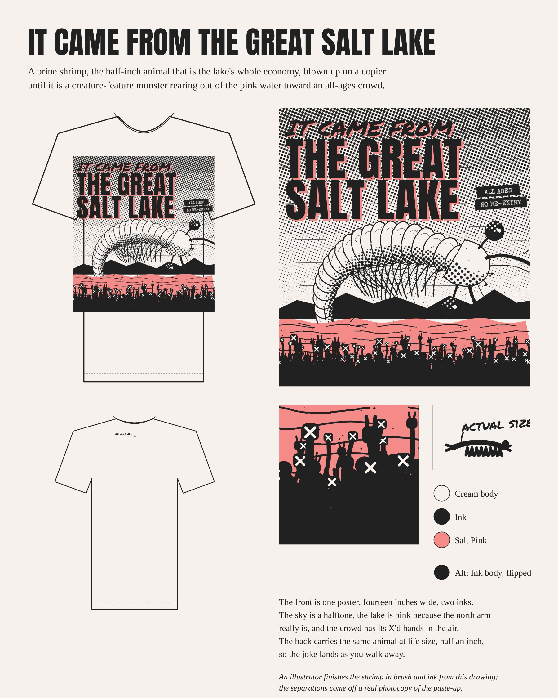
It Came From the Great Salt Lake
The half-inch brine shrimp that runs the lake's economy, blown up on a copier into a 1950s creature-feature monster rearing out of the pink north arm toward an all-ages crowd. The same animal sits at life size on the upper back.
Blank: 7 oz heavyweight boxy tee in Cream, so the print looks copied onto paper.
Technique: 2-color water-based screen print, pink down first, ink on top with a deliberate 1/16 in offset, separations from a real photocopy.
Alt: Ink body with the art flipped negative, so the halftone sky turns into stars.
$17 to $22 landed
Sea-Monkey from hell.
36
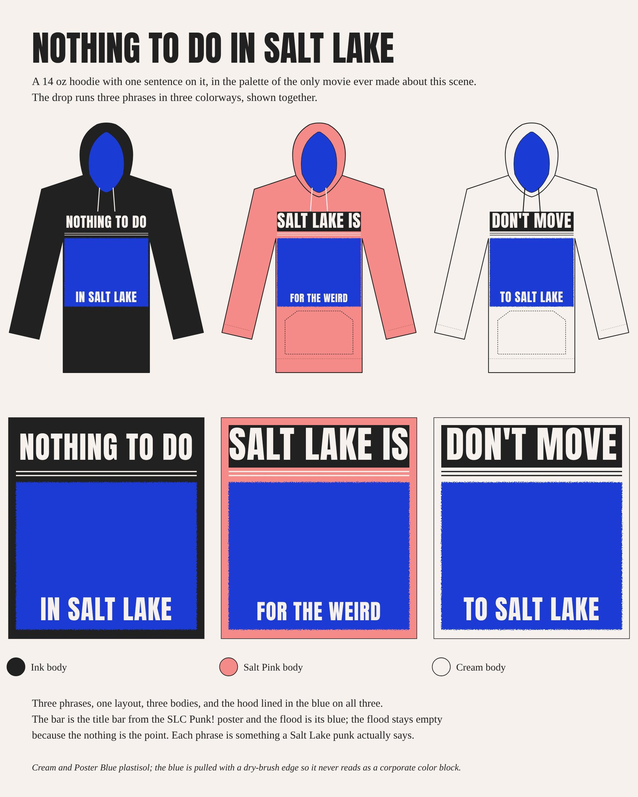
Nothing To Do In Salt Lake
One sentence in the SLC Punk! poster layout: NOTHING TO DO on a black bar, an empty electric-blue flood, IN SALT LAKE along its bottom edge. The empty blue is the nothing. One hoodie, one phrase.
Body: washed Ink, 14 oz cross-grain fleece, hood lined in electric blue.
Print: cream and blue plastisol, the blue pulled with a dry edge.
Cut: the other two phrases and colorways, per your note.
$38 to $48 landed
Yeah, that's what we said at 16, and then we went to Kilby every night.
37
We run on Salt Lake.
A training ground with a zip code. People here run the Bonneville Shoreline before work, skin up in the dark, climb granite at lunch. The line should feel like race kit: honest fabric, reflective that only shows in headlights, copy that talks straight to the runner.
Nike and Wieden+Kennedy, 1990Polartec Alpha DirectBlack Diamond in Little CottonwoodThe Bonneville Shoreline above the grid
38
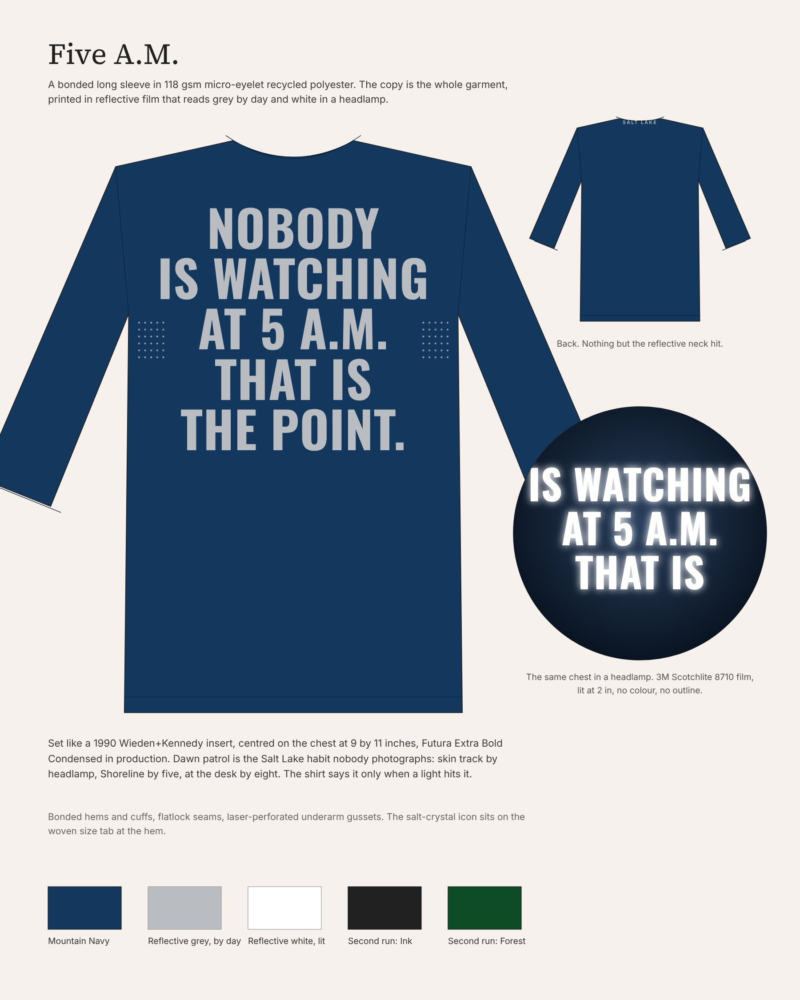
Five A.M.
"Nobody is watching at 5 a.m. That is the point." stacked huge across the chest of a bonded technical longsleeve, in reflective film. Grey on navy by day, white in a headlamp. It only says it when nobody is watching.
Blank: 118 gsm recycled micro-eyelet jersey, bonded hem and cuffs, laser-perforated underarm gussets.
Technique: 3M Scotchlite reflective transfer, 9 x 11 in chest block, Futura Extra Bold Condensed.
Verify first: solid film can board the chest, so sample a 50 percent halftone of the film next to solid.
$38 to $55 landed
That is the Shoreline at five in March.
39
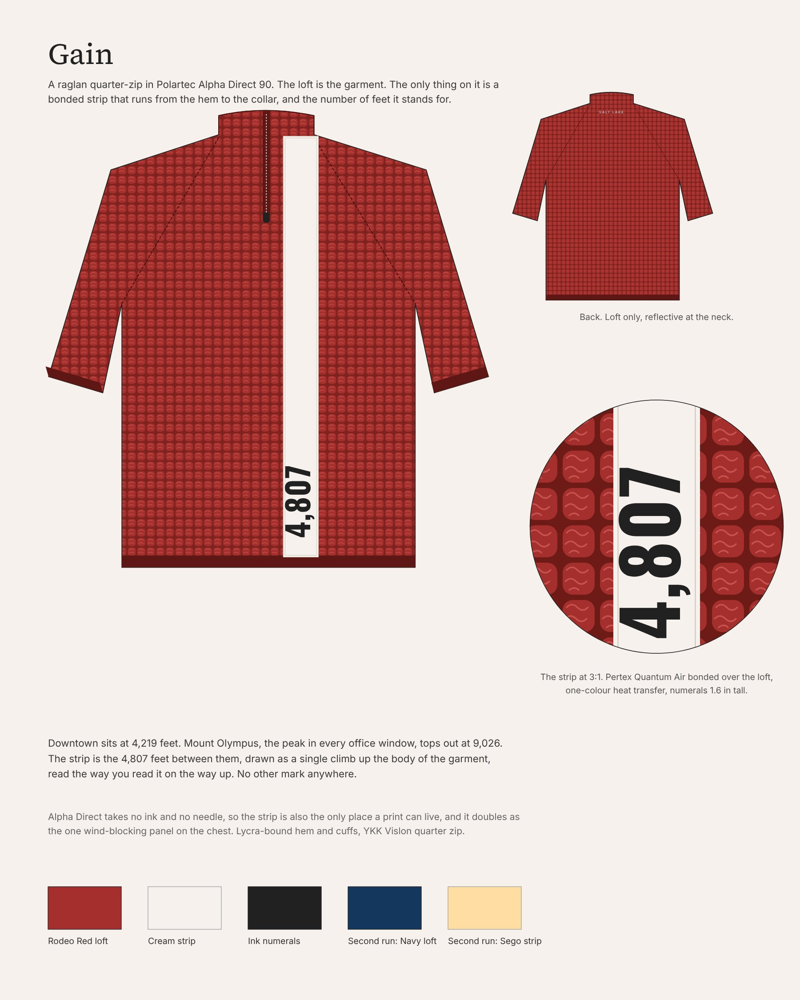
Gain
An Alpha Direct quarter-zip with one bonded strip running from hem to collar beside the zip. The only type is 4,807, set tall and reading upward: the vertical from the valley floor to the summit of Mount Olympus, the climb as the garment.
Blank: Polartec Alpha Direct 90, raglan quarter-zip, Rodeo Red.
Technique: the number is heat-transferred onto a bonded Pertex strip, because the loft takes no ink or needle.
Sourcing: Alpha Direct needs a converter or a Black Diamond or Kühl partner at small minimums.
$75 to $110 landed
4,807. From where? Then they look up at Olympus.
40
The unseen objects of a Salt Lake day.
Not souvenirs. The things you touch between the lift line and the kitchen: the rack your board hangs on, the pouch with your keys and transit card, the record you put on when the snow comes down. Designed like they matter, with the lake as the raw material.
The lake from the ISS, pink and blueDistrict Vision eyewear pouchA24 soundtrack vinylArtemia franciscana
41
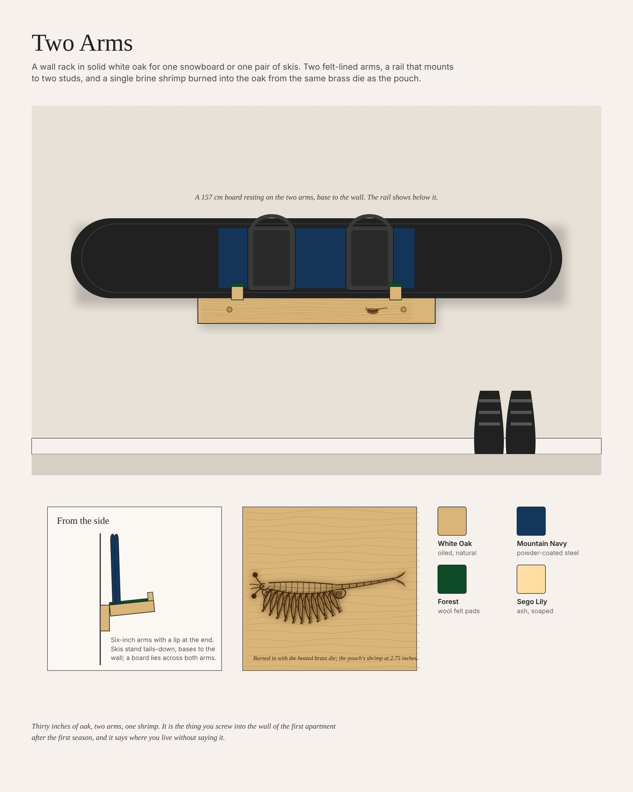
Two Arms
A 30-inch white oak rail with two felt-topped arms holding a snowboard or skis. Per your note, a pattern of local fossils is laser-burned along the whole rail face, and the brine shrimp is one of many.
Pattern: Lake Bonneville snails and clams, fish, a mammoth tooth, brine shrimp and their cysts, drawn like a natural-history plate.
Check first: which fossils are truly from the Salt Lake area. Allosaurus is the state fossil but comes from Emery County.
Where it sells: online and a few shops with local shipping.
$35 to $75 landed
That's a sea monkey on my ski rack.
42
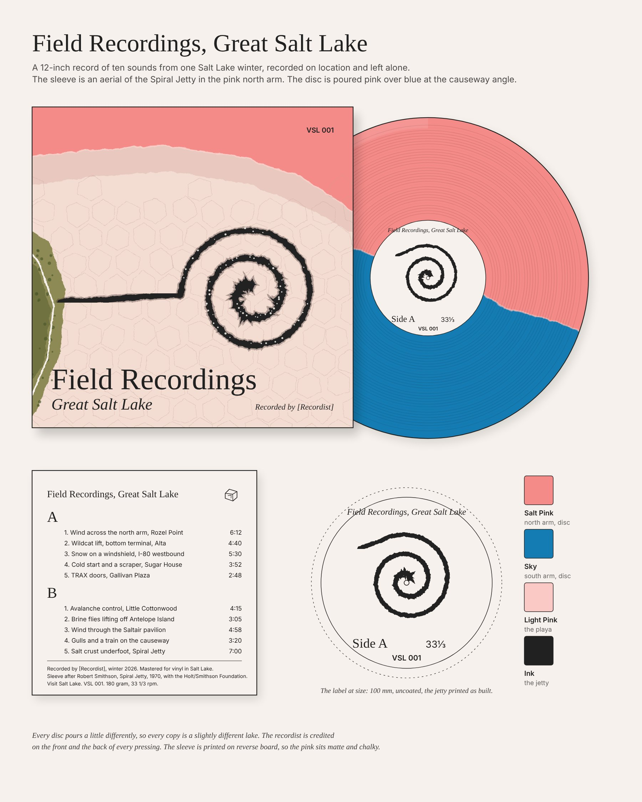
Field Recordings, Great Salt Lake
A 12-inch LP of ten real Salt Lake sounds, from wind on the north arm to the lift sheaves at Alta. Two sleeves, per your note.
Version A: the Spiral Jetty wraps the whole sleeve, split pink-over-blue vinyl. Needs Holt/Smithson Foundation permission.
Version B, county-specific: an overhead Wasatch texture, forest green on the high slopes to desert tan along the old Bonneville bench, canyons cut through. No permission needed.
Pressing: 100 minimum, 50 held for gifting and press, 10 to 16 weeks at the plant.
$25 to $35 each at 100
A2 is the Wildcat lift. I'd know that hum anywhere.
43
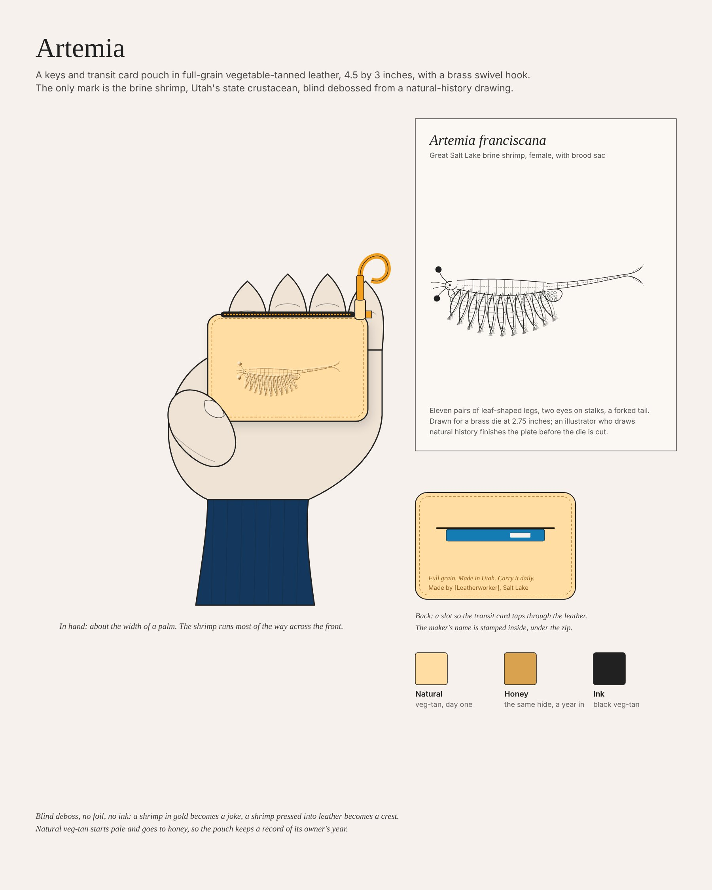
Artemia
A keys-and-transit-card zip pouch in veg-tan leather with brass hardware and a tap-through card slot. The only mark is a natural-history drawing of Artemia franciscana, blind-debossed. No foil, no ink, no logo.
Material: veg-tan leather in Natural, Honey or Ink, brass zip.
Technique: blind deboss from the shared brass die.
Verify first: a natural-history illustrator redraws the shrimp by hand before the die is cut, or it reads as a bug.
$28 to $45 landed
Is that a brine shrimp? Sea monkeys.
44
Rancher at 7,000 feet.
Western is having its biggest moment in decades, and the version that works is restraint: one chain-stitched motif, a quilt hidden in a lining, a single-color drawing on a rag. Salt Lake earns it honestly, with a longhorn drive through downtown and a bison herd on the island.
Bode, quilt jacketFort Lonesome, chain stitch in progressAntelope Island roundupIndian paintbrush, Albion Basin
45
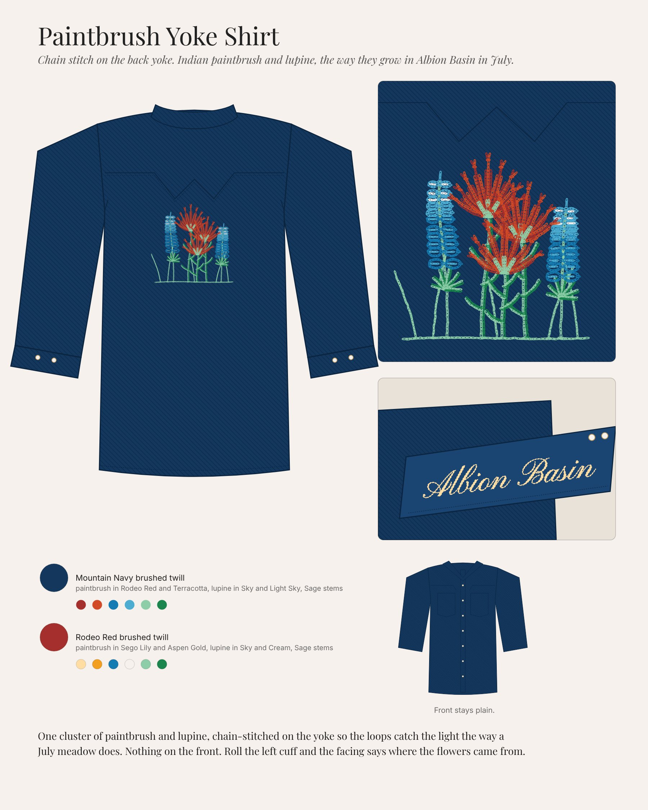
Paintbrush Yoke Shirt
A Mountain Navy brushed-twill snap shirt with one chain-stitched cluster of Indian paintbrush and lupine on the back yoke, and nothing else. Roll the left cuff and "Albion Basin" is stitched in script inside it.
Blank: 7 oz brushed cotton twill snap shirt, pearl snaps with copper rims.
Technique: chain stitch, six thread colors, 4.5 x 3.5 in on the yoke.
Colorways: Mountain Navy, Rodeo Red. Summer alt in chambray.
$48 to $75 landed
That's the paintbrush up at Albion in July.
46
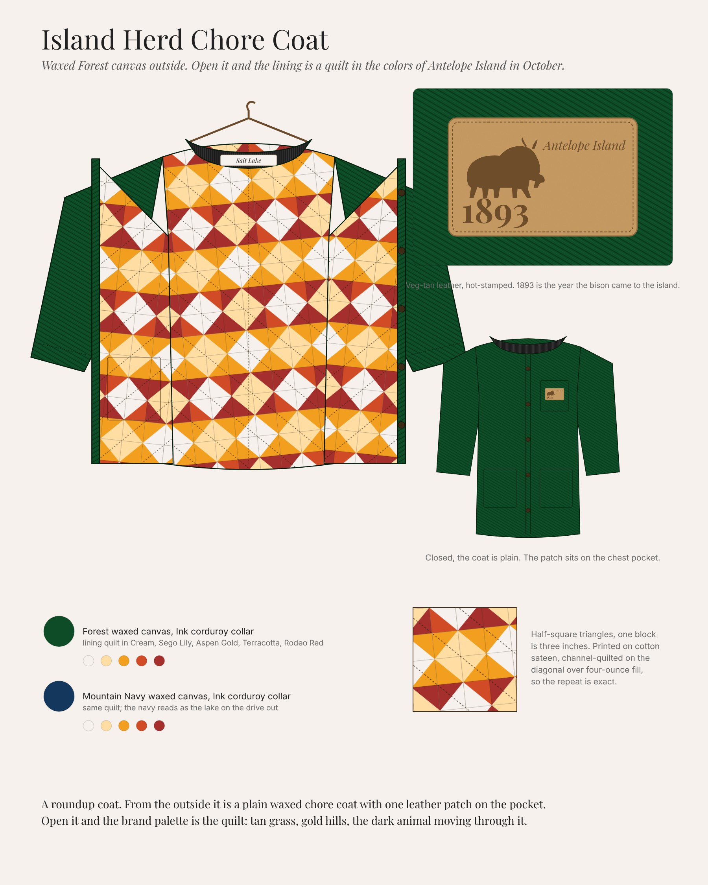
Island Herd Chore Coat
A plain waxed Forest canvas chore coat. Open it and the lining is a half-square-triangle quilt in Cream, Sego Lily, Aspen Gold, Terracotta and Rodeo Red. One leather patch: a bison, "Antelope Island," and 1893, the year the bison came to the island.
Route at 50: a stock waxed chore blank, re-lined, with a leather patch. Full cut-and-sew is not a sensible 50-unit test.
Date: 1893 is the herd date. The roundup's own founding year is unsettled, so it stays off the patch.
$85 to $130 landed
That's the island herd.
47
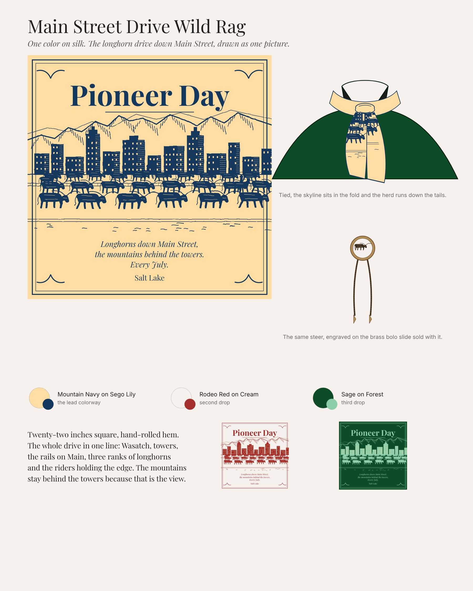
Main Street Drive Wild Rag
A 22-inch wild rag with one single-color drawing: longhorns and riders coming down Main Street, downtown towers and two Wasatch ridgelines behind them. Headlined Pioneer Day, which needs no license.
Colorway: Sage line on Forest ground, the one you preferred.
Blank: silk twill, or cotton for a lower price.
Set: pairs with a brass bolo slide engraved with the same steer.
$14 to $24 silk
They really drive cattle down Main?
48
Latin life in the West.
Not Hispanic Heritage Month. Latin life as it is already lived here: a lowrider under the Wasatch, La Barra Real at RSL, a jaripeo at the Fairpark. The words come from the community, and the line is designed by Latino designers from Salt Lake County with a share of revenue going back.
Paisa Boys, Club DeportivoMister Cartoon, by Estevan OriolLowrider at Gallivan CenterLotería boards
49
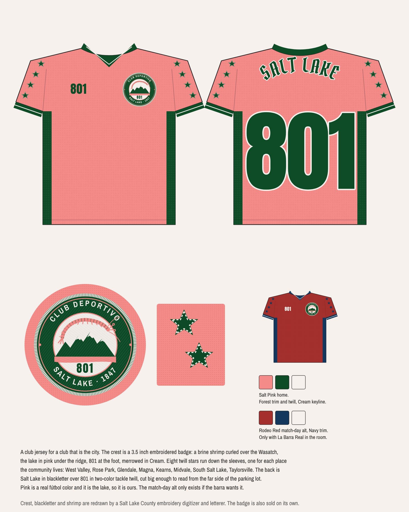
Club Deportivo Salt Lake
A supporters' jersey for a club that is the city itself. Salt Pink with Forest trim, an embroidered crest of a brine shrimp over the Wasatch ridge with 801 at the foot, neighborhood stars on the sleeves, SALT LAKE arched over 801 on the back.
Home (lead): Salt Pink body, Forest trim, the colorway you preferred.
Alt: Rodeo Red body, Mountain Navy trim. Both get made.
Crest: 3.5 in embroidered patch, sewn on, also sold alone.
Open: 801 covers Provo and Ogden too; the star count is the community designers' call.
$26 to $60 landed
Which club is that? Nosotros.
50
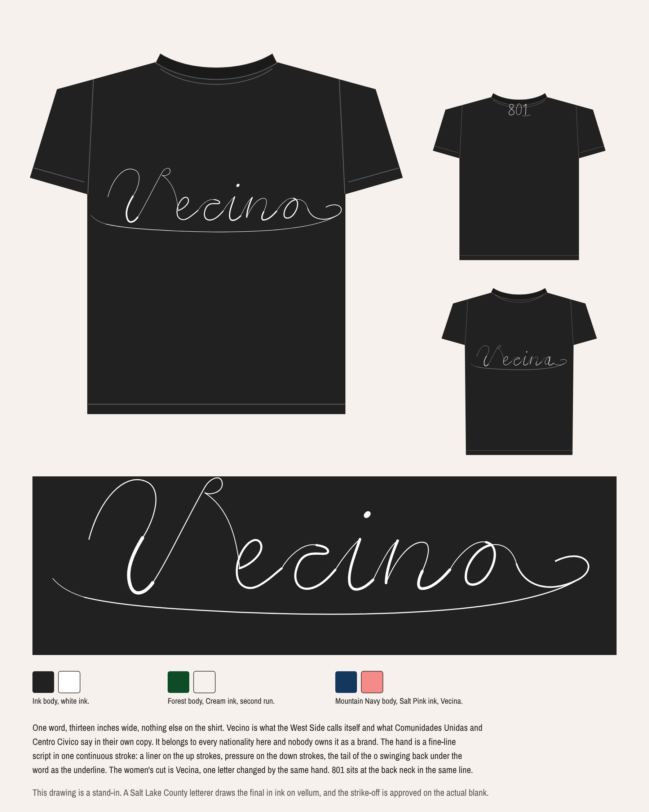
Vecino
One word, neighbor, across the chest in a single fine line, drawn by hand. Vecina on the women's cut. 801 at the back neck.
Why this word: Paisa and Hyna belong to other brands, Raza carries political weight VSL has no standing to use, Familia and Barrio are on a thousand tees. Vecino belongs to everyone and nobody owns it.
Technique: one-color white water-based print, 230 mesh, the letterer approves the strike-off.
$10 to $20 landed
That's it? Yeah, that's it.
51
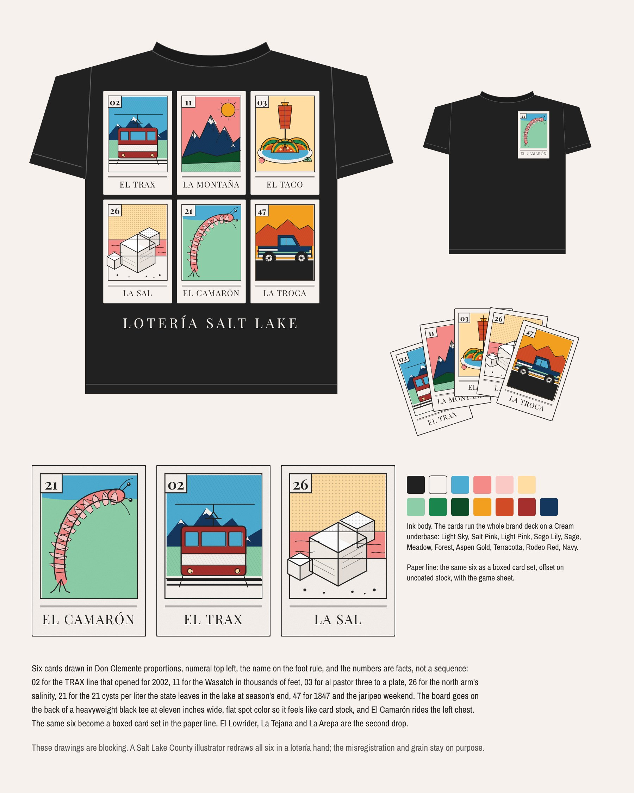
Lotería Salt Lake
Six lotería cards on the back of a black tee: El Trax, La Montaña, El Taco, La Sal, El Camarón, La Troca. Every card number is a local fact. El Camarón alone on the chest.
Technique: flat spot colors on a cream underbase, no halftones, so it feels like card stock.
Second drop: El Lowrider.
Rule: if the illustrator is not from here, cut it.
$28 to $38 landed
Where's El Lowrider?
52
The line, Round 1.
Thirteen pieces across five lanes, kept from fifteen in Round 2 and from 132 references on the mood boards.
53
Each lane drops in its own room, on its own day.
Not at the airport. Each lane launches where its people already are, on a date the city already keeps. This is a proposal for you to rearrange.
Lane
When
Where
Streetwear
An all-ages show night
A Kilby Court-style pop-up, then online
Performance
First snow, before dawn
A run club meetup on the Bonneville Shoreline, then online
Objects
Winter, with the LP
Record shops and a few design shops, then online
Neo-Western
Pioneer Day, July 24
A downtown pop-up near the parade route
Latino
El Grito, September 16
With Centro Civico Mexicano, at the community's own event
54
The build: make it, price it, clear it.
How a 50-unit test gets made, what it costs, how long it takes, and what has to be cleared before the first sample.
55
The first run is a 50-unit test.
50
Fifty of each piece is enough to learn which lanes sell, to whom, at what price, and which makers deliver. It isn't enough to make money, and it isn't meant to.
56
What each piece costs to make at 50.
Landed cost per unit at a 50-unit test, from the lane notes. Every figure is an estimate until a maker quotes it. Retail pricing waits for Round 2, as you asked.
Piece
Route at 50
Landed per unit (est.)
It Came From the Great Salt Lake
Heavyweight blank, 2-color water-based print
$17 to $22
Nothing To Do in Salt Lake hoodie
14 oz blank, lined hood, plastisol
$38 to $48
Five A.M.
Stock tech blank, reflective film, laser gussets
$38 to $55
Gain
Domestic tech shop, our pattern
$75 to $110
Two Arms
Salt Lake woodshop, white oak
$45 to $75
Field Recordings, Great Salt Lake
US pressing plant, 100 minimum
$50 to $70 at 50; $25 to $35 at 100
Artemia
Salt Lake leatherworker
$28 to $45
Paintbrush Yoke Shirt
Stock snap shirt, machine chain stitch
$48 to $75
Island Herd Chore Coat
Stock waxed chore coat, re-lined, leather patch
$85 to $130
Main Street Drive Wild Rag
Silk twill, 1-color water-based print
$14 to $24
Club Deportivo Salt Lake jersey
LA cut-and-sew, patch and twill
$45 to $60
Vecino
LAA 1801GD, 1-color water-based print
$15 to $20
Lotería Salt Lake
LAA 1801GD, 12-color spot print
$28 to $38
Lane notes, Round 2, 2026 · Research 05, small-run economics and pricing, 2026
57
Production lanes and timeline.
A holiday and ski-season drop wants product in hand by early November. Working back from that date, the slowest lane starts in spring.
Production lane
Pieces
Concept to product in hand
Start by
Decorated blank, domestic printer
It Came From, Nothing To Do, Vecino, Lotería, Wild Rag
6 to 10 weeks
Late August
Stock blank plus a specialist step
Five A.M., Paintbrush Yoke Shirt, Island Herd Chore Coat
6 to 10 weeks plus the specialist's queue (verify)
June (verify)
Domestic cut-and-sew
Club Deportivo jersey, Gain
4 to 7 months
April
Local makers
Two Arms, Artemia
Not in our research yet (verify)
Spring, after a quote (verify)
Pressing plant
Field Recordings, Great Salt Lake
10 to 16 weeks at the plant, after recording and permission
Plant booked by mid-July
Research 05, realistic calendar, 2026 · Lane notes, Round 2, 2026
58
Starting the manufacturer conversation.
Bring a tech pack, quantities by style, color and size, a target landed cost and retail, the drop date, vector art with Pantones, and the origin claims we plan to make. Then ask each maker for the one test below.
Piece
Verify before sampling
It Came From the Great Salt Lake
A press proof of the halftone sky at 110 mesh, water-based on cream. Do the small dots fill in?
Nothing To Do in Salt Lake hoodie
Will the blank maker sell the hoodie with the hood lining left off, or in our color?
Five A.M.
Does an 11 in block of reflective film stiffen the chest and crack? Test a 50 percent halftone against solid.
Gain
Does the bond hold a 26 in Pertex strip to the loft through 20 washes? Test a 6 in strip first.
Two Arms
Does the burned shrimp keep its eleven pairs of legs at 2.75 in on oak?
Field Recordings, Great Salt Lake
Written permission from the Holt/Smithson Foundation, plus recording releases from Alta and UTA.
Artemia
Does the die hold the leg hatching at 2.75 in? Strike one on scrap veg-tan.
Paintbrush Yoke Shirt
Can a multi-head chain-stitch house hold six thread changes in a 4.5 in motif at 50? Sew-out on our twill.
Island Herd Chore Coat
Print and quilt one yard of the lining; if it reads as a motel bedspread, the piece fails. Confirm we can relabel the blank.
Main Street Drive Wild Rag
A strike-off of water-based ink on the actual silk, washed twice.
Club Deportivo Salt Lake jersey
Clearance on 801 as an apparel mark, and a sit-down with La Barra Real before sample one.
Vecino
Print the hairline test strip on the actual blank; the result sets the thinnest stroke.
Lotería Salt Lake
A wet-on-wet test of twelve spot colors on the cream underbase on black.
Research 05, first manufacturer conversation, 2026 · Lane notes, Round 2, 2026
59
Legal and licensing.
General information, not legal advice. Counsel and a CPA should be in the room early.
Issue
The rule
What we do
Olympic marks
The Ted Stevens Act protects "Olympic," the rings, ring look-alikes, wordplay and Games marks, with no proof of confusion needed.
Nothing on product. 2002 shows up only as history.
"The Greatest Snow on Earth"
A federally registered mark owned by the State of Utah.
Off limits. We use the snow science instead.
State tourism brand
The Utah Office of Tourism's marks need written permission.
Not used. "Utah" as a word is fine.
"Made in USA" and "Made in Utah"
FTC standard: all or virtually all made here. Penalties up to about $53,000 per violation, website banners included.
Say "Designed and decorated in Salt Lake." Rewrite the Artemia stamp.
UBIT
Souvenir sales by a nonprofit can be taxed as unrelated business income. Passive royalties generally aren't.
License the line for a royalty. Get a CPA opinion.
Sales tax and labels
Retail sales are generally taxable. Labels need fiber, origin, care and an RN number.
A Utah sales tax license (verify); labels in every tech pack.
Permissions
Holt/Smithson Foundation for the jetty, Alta and UTA for recordings, 801 clearance, La Barra Real.
Ask before sample one, not after.
USOPC guidelines, via research 05 · USPTO Reg. 3031199, 2005 · FTC Made in USA Labeling Rule, 2021 · Adler and Colvin, UBIT primer
60
Partners and credits.
VSL is licensor and curator, not author. The people who finish the work get their names on it.
Who
What they do
Pieces
Latino designers from Salt Lake County
Design the lane, with West Valley, Rose Park and Glendale first
Club Deportivo, Vecino, Lotería
A community letterer and illustrator
Redraw every line, script and card in their own hand
Vecino, Lotería, the jersey's SALT LAKE
Centro Civico Mexicano or Comunidades Unidas
Revenue share, with the org named on the hangtag
The Latino lane
La Barra Real
Co-sign the match-day kit
Club Deportivo jersey
Illustrators and letterers
The brush-and-ink shrimp, the natural-history plate, the dry-brush cattle drive, the hand-lettered titles
It Came From, Artemia, Two Arms, Wild Rag
A Utah field recordist
Record the LP, credited on the front
Field Recordings, Great Salt Lake
Makers
A Salt Lake woodshop and leatherworker, a chain-stitch house, a Utah laser shop, a local sewing shop, a county embroidery digitizer
Two Arms, Artemia, Paintbrush Yoke, Five A.M., Island Herd, the jersey crest
Lane notes, Round 2, 2026 · Research 04, principles, 2026
61
Decisions needed, and what happens next.
The structure. License the line to a Utah maker for a royalty, or run it in-house. We recommend licensing because of UBIT, once a CPA confirms.
The first pieces. Which of the thirteen go in the 50-unit test. The cheapest to learn from are Vecino, It Came From and the Wild Rag.
The irony call. VSL has to want NOTHING TO DO IN SALT LAKE on a hoodie. DON'T MOVE TO SALT LAKE is a new third phrase and needs Yid's yes.
Three asks before sample one. The Holt/Smithson Foundation on the jetty, La Barra Real on the jersey, and a signed Latino design team and partner org.
Round 2. Real makers and written quotes, a name and lockup for the sub-brand, and pricing for the VSL team.